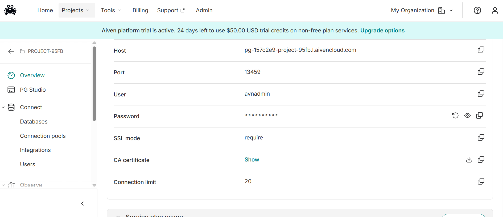
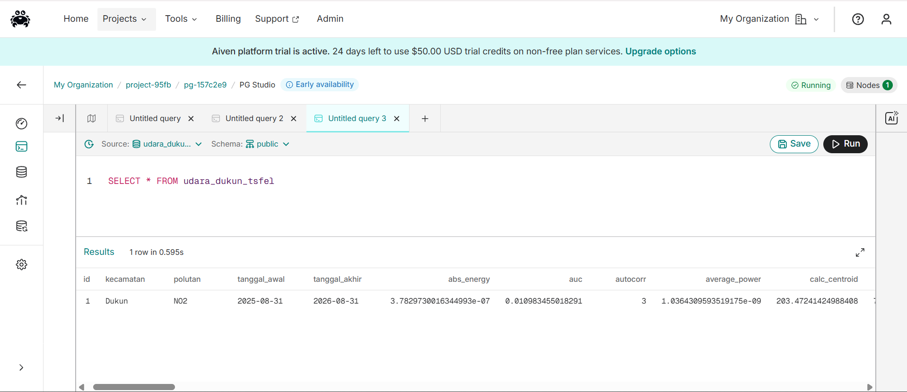

Ekstraksi Fitur Data kualitas udara di wilayah Dukun, Gresik#
Ekstraksi 68 Fitur TSFEL untuk Polutan NO2#
Tahap ini mengekstraksi 68 fitur numerik dari data time series konsentrasi NO2 harian (kolom NO2_imputed) menggunakan pustaka TSFEL. Setiap fitur merepresentasikan satu karakteristik statistik, temporal, spektral, atau kompleksitas dari sinyal, sehingga deret waktu 366 hari diringkas jadi satu baris fitur per kecamatan. Fungsi diambil langsung dari tsfel.feature_extraction.features (bukan lewat extractor tingkat tinggi) agar daftar fitur persis 68 sesuai permintaan, dengan fs=1 karena data harian.
68 fitur dikelompokkan jadi domain2:
Statistik — sebaran nilai NO2 secara keseluruhan: calc_mean, calc_median, calc_std, calc_var, calc_max, calc_min, skewness, kurtosis, interq_range, mean_abs_deviation, median_abs_deviation, ecdf, ecdf_percentile, ecdf_percentile_count, ecdf_slope, hist_mode, pk_pk_distance, rms
Temporal — pola perubahan hari ke hari & kompleksitas/fraktal sinyal: autocorr, distance, slope, entropy, zero_cross, mean_diff, median_diff, mean_abs_diff, median_abs_diff, sum_abs_diff, positive_turning, negative_turning, neighbourhood_peaks, calc_centroid, auc, abs_energy, mse, dfa, hurst_exponent, higuchi_fractal_dimension, petrosian_fractal_dimension, maximum_fractal_length, lempel_ziv
Spektral — pola frekuensi/musiman hasil transformasi Fourier: spectral_centroid, spectral_spread, spectral_skewness, spectral_kurtosis, spectral_entropy, spectral_slope, spectral_decrease, spectral_distance, spectral_variation, spectral_positive_turning, spectral_roll_off, spectral_roll_on, max_frequency, median_frequency, fundamental_frequency, max_power_spectrum, power_bandwidth, average_power, human_range_energy, mfcc, lpcc, spectrogram_mean_coeff
!pip install tsfel
Requirement already satisfied: tsfel in c:\users\faziz\appdata\local\programs\python\python39\lib\site-packages (0.2.0)
Requirement already satisfied: ipython>=7.4.0 in c:\users\faziz\appdata\local\programs\python\python39\lib\site-packages (from tsfel) (8.18.1)
Requirement already satisfied: numpy>=1.18.5 in c:\users\faziz\appdata\local\programs\python\python39\lib\site-packages (from tsfel) (2.0.2)
Requirement already satisfied: pandas>=1.5.3 in c:\users\faziz\appdata\local\programs\python\python39\lib\site-packages (from tsfel) (2.3.3)
Requirement already satisfied: PyWavelets>=1.4.1 in c:\users\faziz\appdata\local\programs\python\python39\lib\site-packages (from tsfel) (1.6.0)
Requirement already satisfied: requests>=2.31.0 in c:\users\faziz\appdata\local\programs\python\python39\lib\site-packages (from tsfel) (2.32.5)
Requirement already satisfied: scikit-learn>=0.21.3 in c:\users\faziz\appdata\local\programs\python\python39\lib\site-packages (from tsfel) (1.6.1)
Requirement already satisfied: scipy>=1.7.3 in c:\users\faziz\appdata\local\programs\python\python39\lib\site-packages (from tsfel) (1.13.1)
Requirement already satisfied: setuptools>=47.1.1 in c:\users\faziz\appdata\local\programs\python\python39\lib\site-packages (from tsfel) (49.2.1)
Requirement already satisfied: statsmodels>=0.12.0 in c:\users\faziz\appdata\local\programs\python\python39\lib\site-packages (from tsfel) (0.14.6)
Requirement already satisfied: decorator in c:\users\faziz\appdata\local\programs\python\python39\lib\site-packages (from ipython>=7.4.0->tsfel) (5.2.1)
Requirement already satisfied: jedi>=0.16 in c:\users\faziz\appdata\local\programs\python\python39\lib\site-packages (from ipython>=7.4.0->tsfel) (0.19.2)
Requirement already satisfied: matplotlib-inline in c:\users\faziz\appdata\local\programs\python\python39\lib\site-packages (from ipython>=7.4.0->tsfel) (0.2.1)
Requirement already satisfied: prompt-toolkit<3.1.0,>=3.0.41 in c:\users\faziz\appdata\local\programs\python\python39\lib\site-packages (from ipython>=7.4.0->tsfel) (3.0.52)
Requirement already satisfied: pygments>=2.4.0 in c:\users\faziz\appdata\local\programs\python\python39\lib\site-packages (from ipython>=7.4.0->tsfel) (2.19.2)
Requirement already satisfied: stack-data in c:\users\faziz\appdata\local\programs\python\python39\lib\site-packages (from ipython>=7.4.0->tsfel) (0.6.3)
Requirement already satisfied: traitlets>=5 in c:\users\faziz\appdata\local\programs\python\python39\lib\site-packages (from ipython>=7.4.0->tsfel) (5.14.3)
Requirement already satisfied: typing-extensions in c:\users\faziz\appdata\local\programs\python\python39\lib\site-packages (from ipython>=7.4.0->tsfel) (4.15.0)
Requirement already satisfied: exceptiongroup in c:\users\faziz\appdata\local\programs\python\python39\lib\site-packages (from ipython>=7.4.0->tsfel) (1.3.1)
Requirement already satisfied: colorama in c:\users\faziz\appdata\local\programs\python\python39\lib\site-packages (from ipython>=7.4.0->tsfel) (0.4.6)
Requirement already satisfied: wcwidth in c:\users\faziz\appdata\local\programs\python\python39\lib\site-packages (from prompt-toolkit<3.1.0,>=3.0.41->ipython>=7.4.0->tsfel) (0.6.0)
Requirement already satisfied: parso<0.9.0,>=0.8.4 in c:\users\faziz\appdata\local\programs\python\python39\lib\site-packages (from jedi>=0.16->ipython>=7.4.0->tsfel) (0.8.6)
Requirement already satisfied: python-dateutil>=2.8.2 in c:\users\faziz\appdata\local\programs\python\python39\lib\site-packages (from pandas>=1.5.3->tsfel) (2.9.0.post0)
Requirement already satisfied: pytz>=2020.1 in c:\users\faziz\appdata\local\programs\python\python39\lib\site-packages (from pandas>=1.5.3->tsfel) (2025.2)
Requirement already satisfied: tzdata>=2022.7 in c:\users\faziz\appdata\local\programs\python\python39\lib\site-packages (from pandas>=1.5.3->tsfel) (2025.3)
Requirement already satisfied: six>=1.5 in c:\users\faziz\appdata\local\programs\python\python39\lib\site-packages (from python-dateutil>=2.8.2->pandas>=1.5.3->tsfel) (1.17.0)
Requirement already satisfied: charset_normalizer<4,>=2 in c:\users\faziz\appdata\local\programs\python\python39\lib\site-packages (from requests>=2.31.0->tsfel) (3.4.4)
Requirement already satisfied: idna<4,>=2.5 in c:\users\faziz\appdata\local\programs\python\python39\lib\site-packages (from requests>=2.31.0->tsfel) (3.11)
Requirement already satisfied: urllib3<3,>=1.21.1 in c:\users\faziz\appdata\local\programs\python\python39\lib\site-packages (from requests>=2.31.0->tsfel) (2.6.3)
Requirement already satisfied: certifi>=2017.4.17 in c:\users\faziz\appdata\local\programs\python\python39\lib\site-packages (from requests>=2.31.0->tsfel) (2026.1.4)
Requirement already satisfied: joblib>=1.2.0 in c:\users\faziz\appdata\local\programs\python\python39\lib\site-packages (from scikit-learn>=0.21.3->tsfel) (1.5.3)
Requirement already satisfied: threadpoolctl>=3.1.0 in c:\users\faziz\appdata\local\programs\python\python39\lib\site-packages (from scikit-learn>=0.21.3->tsfel) (3.6.0)
Requirement already satisfied: patsy>=0.5.6 in c:\users\faziz\appdata\local\programs\python\python39\lib\site-packages (from statsmodels>=0.12.0->tsfel) (1.0.3)
Requirement already satisfied: packaging>=21.3 in c:\users\faziz\appdata\local\programs\python\python39\lib\site-packages (from statsmodels>=0.12.0->tsfel) (26.0)
Requirement already satisfied: executing>=1.2.0 in c:\users\faziz\appdata\local\programs\python\python39\lib\site-packages (from stack-data->ipython>=7.4.0->tsfel) (2.2.1)
Requirement already satisfied: asttokens>=2.1.0 in c:\users\faziz\appdata\local\programs\python\python39\lib\site-packages (from stack-data->ipython>=7.4.0->tsfel) (3.0.1)
Requirement already satisfied: pure-eval in c:\users\faziz\appdata\local\programs\python\python39\lib\site-packages (from stack-data->ipython>=7.4.0->tsfel) (0.2.3)
import pandas as pd
import numpy as np
import inspect
import tsfel.feature_extraction.features as tsfel_features
# ---------- 1. Muat dan bersihkan data ----------
df = pd.read_csv('NO2_Dukun_Cleaned.csv')
df['date'] = pd.to_datetime(df['date'])
df = df.sort_values('date').reset_index(drop=True)
target_pollutant = 'NO2'
# --- FIX: paksa kolom target jadi numerik, nilai yang gagal dikonversi -> NaN ---
df[target_pollutant] = pd.to_numeric(df[target_pollutant], errors='coerce')
n_missing_before = df[target_pollutant].isna().sum()
print(f"Jumlah nilai non-numerik/kosong yang dikonversi jadi NaN: {n_missing_before}")
Q1 = df[target_pollutant].quantile(0.25)
Q3 = df[target_pollutant].quantile(0.75)
IQR = Q3 - Q1
lower_bound = Q1 - 1.5 * IQR
upper_bound = Q3 + 1.5 * IQR
df.loc[(df[target_pollutant] < lower_bound) | (df[target_pollutant] > upper_bound), target_pollutant] = np.nan
df_clean = df.set_index('date').interpolate(method='time').ffill().bfill()
fs = 1
signal_1d = df_clean[target_pollutant].astype(float).values
# ---------- 2. Daftar PERSIS fitur yang diminta ----------
FEATURE_LIST = """abs_energy auc autocorr average_power calc_centroid calc_max calc_mean
calc_median calc_min calc_std calc_var dfa distance ecdf ecdf_percentile ecdf_percentile_count
ecdf_slope entropy fundamental_frequency higuchi_fractal_dimension hist_mode human_range_energy
hurst_exponent interq_range kurtosis lempel_ziv lpcc max_frequency max_power_spectrum
maximum_fractal_length mean_abs_deviation mean_abs_diff mean_diff median_abs_deviation
median_abs_diff median_diff median_frequency mfcc mse negative_turning neighbourhood_peaks
petrosian_fractal_dimension pk_pk_distance positive_turning power_bandwidth rms skewness slope
spectral_centroid spectral_decrease spectral_distance spectral_entropy spectral_kurtosis
spectral_positive_turning spectral_roll_off spectral_roll_on spectral_skewness spectral_slope
spectral_spread spectral_variation spectrogram_mean_coeff sum_abs_diff wavelet_abs_mean
wavelet_energy wavelet_entropy wavelet_std wavelet_var zero_cross""".split()
print("Jumlah fitur yang diminta:", len(FEATURE_LIST))
def to_scalar(result):
if isinstance(result, dict) and "values" in result:
result = result["values"]
if isinstance(result, (list, tuple, np.ndarray)):
arr = np.asarray(result, dtype=float)
return float(np.nanmean(arr))
return float(result)
def extract_one(fn_name, signal, fs):
fn = getattr(tsfel_features, fn_name)
params = inspect.signature(fn).parameters
if "fs" in params:
result = fn(signal, fs)
else:
result = fn(signal)
return to_scalar(result)
row = {}
for fn_name in FEATURE_LIST:
row[fn_name] = extract_one(fn_name, signal_1d, fs)
extracted_features_final = pd.DataFrame([row])
print(f"Berhasil! Jumlah fitur yang dihasilkan untuk {target_pollutant}: {extracted_features_final.shape[1]}")
extracted_features_final.to_csv(f'{target_pollutant}_Dukun_TSFEL.csv', index=False)
Jumlah nilai non-numerik/kosong yang dikonversi jadi NaN: 159
Jumlah fitur yang diminta: 68
Berhasil! Jumlah fitur yang dihasilkan untuk NO2: 68
import pandas as pd
df_fitur = pd.read_csv("NO2_Dukun_TSFEL.csv")
pd.set_option('display.max_columns', None)
display(df_fitur)
| abs_energy | auc | autocorr | average_power | calc_centroid | calc_max | calc_mean | calc_median | calc_min | calc_std | calc_var | dfa | distance | ecdf | ecdf_percentile | ecdf_percentile_count | ecdf_slope | entropy | fundamental_frequency | higuchi_fractal_dimension | hist_mode | human_range_energy | hurst_exponent | interq_range | kurtosis | lempel_ziv | lpcc | max_frequency | max_power_spectrum | maximum_fractal_length | mean_abs_deviation | mean_abs_diff | mean_diff | median_abs_deviation | median_abs_diff | median_diff | median_frequency | mfcc | mse | negative_turning | neighbourhood_peaks | petrosian_fractal_dimension | pk_pk_distance | positive_turning | power_bandwidth | rms | skewness | slope | spectral_centroid | spectral_decrease | spectral_distance | spectral_entropy | spectral_kurtosis | spectral_positive_turning | spectral_roll_off | spectral_roll_on | spectral_skewness | spectral_slope | spectral_spread | spectral_variation | spectrogram_mean_coeff | sum_abs_diff | wavelet_abs_mean | wavelet_energy | wavelet_entropy | wavelet_std | wavelet_var | zero_cross | |
|---|---|---|---|---|---|---|---|---|---|---|---|---|---|---|---|---|---|---|---|---|---|---|---|---|---|---|---|---|---|---|---|---|---|---|---|---|---|---|---|---|---|---|---|---|---|---|---|---|---|---|---|---|---|---|---|---|---|---|---|---|---|---|---|---|---|---|---|---|
| 0 | 3.782973e-07 | 0.010983 | 3.0 | 1.036431e-09 | 203.472414 | 0.000071 | 0.00003 | 0.000028 | 0.000007 | 0.000011 | 1.293063e-10 | 0.869955 | 365.0 | 0.015027 | 0.00003 | 182.5 | 29976.74047 | 0.999358 | 0.002732 | 1.920019 | 0.00003 | 0.0 | 0.783378 | 0.000014 | 0.806169 | 0.18306 | 0.6677 | 0.42623 | 67.045594 | -2.519529 | 0.000009 | 0.000006 | -3.717708e-08 | 0.000007 | 0.000003 | -2.173505e-07 | 0.087432 | 16.896036 | 1.036666 | 57.0 | 15.0 | 1.020639 | 0.000063 | 58.0 | 0.29235 | 0.000032 | 0.954705 | 2.748443e-08 | 0.131274 | -2.098373 | -1.763756 | 0.73751 | 2.709172 | 61.0 | 0.42623 | 0.0 | 0.927511 | -0.030637 | 0.142728 | 0.332346 | 1.727637e-10 | 0.002232 | 0.000002 | 0.000017 | 2.161638 | 0.000017 | 2.963959e-10 | 0.0 |
Penjelasan 68 Fitur TSFEL untuk Data NO2#
Dokumen ini menjelaskan arti dan kegunaan dari 68 fitur yang diekstraksi menggunakan pustaka TSFEL dari data time series konsentrasi NO2 harian. Fitur dikelompokkan menjadi 4 domain: Statistik, Temporal, Spektral, dan Wavelet.
A. Domain Statistik#
Menggambarkan sebaran dan karakteristik nilai NO2 secara keseluruhan, tanpa memperhatikan urutan waktu.
calc_mean— Nilai rata-rata NO2 selama periode data. Kegunaan: menunjukkan level polusi rata-rata suatu kecamatan.calc_median— Nilai tengah data setelah diurutkan. Kegunaan: representasi pusat data yang tidak mudah terpengaruh nilai ekstrem, cocok jika distribusinya condong (skewed).calc_std— Standar deviasi, mengukur seberapa besar fluktuasi nilai dari rata-rata. Kegunaan: kecamatan dengan std tinggi berarti kualitas udaranya lebih fluktuatif/tidak stabil.calc_var— Variansi (kuadrat dari std). Kegunaan: ukuran sebaran data secara keseluruhan, versi lain dari std.calc_max— Nilai NO2 tertinggi yang tercatat. Kegunaan: mengetahui puncak polusi selama periode data.calc_min— Nilai NO2 terendah yang tercatat. Kegunaan: mengetahui kondisi udara terbaik selama periode data.skewness— Kemencengan distribusi (apakah data condong ke nilai tinggi atau rendah). Kegunaan: mendeteksi apakah lonjakan polusi terjadi sesekali (ekor panjang) atau merata.kurtosis— Keruncingan distribusi dibanding distribusi normal. Kegunaan: mendeteksi seberapa sering muncul nilai ekstrem/lonjakan tajam.interq_range— Rentang interkuartil (Q3 − Q1), sebaran 50% data tengah. Kegunaan: ukuran variabilitas yang tahan terhadap outlier.mean_abs_deviation— Rata-rata deviasi absolut terhadap mean. Kegunaan: ukuran variabilitas alternatif, kurang sensitif terhadap outlier ekstrem dibanding std.median_abs_deviation— Median dari deviasi absolut terhadap median. Kegunaan: ukuran sebaran yang sangat robust terhadap outlier, cocok untuk data polusi yang kadang melonjak tajam.ecdf— Empirical Cumulative Distribution Function, kurva yang menunjukkan proporsi data di bawah suatu nilai. Kegunaan: memberi gambaran ringkas distribusi kumulatif nilai NO2.ecdf_percentile— Nilai NO2 pada persentil-persentil tertentu (mis. 25%, 75%). Kegunaan: melihat sebaran nilai pada titik persentil penting.ecdf_percentile_count— Jumlah titik data di bawah persentil acuan. Kegunaan: melengkapiecdf_percentiledengan info kuantitas datanya.ecdf_slope— Kemiringan kurva ECDF antara dua persentil. Kegunaan: menunjukkan seberapa cepat nilai data terkonsentrasi pada suatu rentang.hist_mode— Nilai yang paling sering muncul (modus) berdasarkan histogram. Kegunaan: mengetahui level NO2 “tipikal” yang paling sering terjadi.pk_pk_distance— Peak-to-peak distance, selisih nilai maksimum dan minimum. Kegunaan: mengukur rentang total fluktuasi NO2 selama periode data.rms— Root Mean Square, akar dari rata-rata kuadrat nilai. Kegunaan: mengukur “besaran energi” rata-rata sinyal, memperhitungkan magnitude keseluruhan (bukan hanya rata-rata biasa).
B. Domain Temporal#
Menggambarkan pola perubahan nilai NO2 dari hari ke hari, termasuk tren, osilasi, dan kompleksitas sinyal.
autocorr— Autokorelasi, mengukur kemiripan nilai hari ini dengan nilai di waktu sebelumnya. Kegunaan: mendeteksi pola berulang/musiman pada data.distance— Total panjang lintasan kurva sinyal (jumlah jarak antar titik berurutan). Kegunaan: mengukur seberapa “aktif”/berliku pergerakan NO2 dari hari ke hari.slope— Kemiringan garis tren linear yang di-fit ke seluruh data. Kegunaan: menunjukkan apakah NO2 cenderung naik atau turun secara keseluruhan.entropy— Mengukur tingkat ketidakteraturan/ketidakpastian data. Kegunaan: nilai tinggi berarti pola NO2 lebih acak dan sulit diprediksi.zero_cross— Jumlah kali sinyal melewati garis nol/rata-rata. Kegunaan: mengukur seberapa sering nilai berosilasi naik-turun melewati titik tengahnya.mean_diff— Rata-rata selisih antar titik berurutan. Kegunaan: menunjukkan kecenderungan rata-rata perubahan harian (naik/turun).median_diff— Median dari selisih antar titik berurutan. Kegunaan: versi robust darimean_diff, tidak terlalu dipengaruhi lonjakan ekstrem.mean_abs_diff— Rata-rata nilai absolut selisih antar titik. Kegunaan: mengukur besar rata-rata perubahan harian tanpa memandang arah naik/turun.median_abs_diff— Median nilai absolut selisih antar titik. Kegunaan: versi robust darimean_abs_diff.sum_abs_diff— Total akumulasi seluruh perubahan absolut sepanjang periode. Kegunaan: mengukur total “aktivitas”/volatilitas keseluruhan sinyal.positive_turning— Jumlah titik balik naik (dari turun ke naik). Kegunaan: menghitung frekuensi terjadinya kenaikan mendadak/local minimum.negative_turning— Jumlah titik balik turun (dari naik ke turun). Kegunaan: menghitung frekuensi puncak/local maximum polusi singkat.neighbourhood_peaks— Jumlah puncak (peak) lokal yang terdeteksi dalam sinyal. Kegunaan: mengidentifikasi seberapa sering muncul lonjakan konsentrasi NO2.calc_centroid— Titik pusat massa sinyal berdasarkan waktu. Kegunaan: menunjukkan periode di mana “bobot” konsentrasi NO2 secara rata-rata terkonsentrasi.auc— Area Under Curve, luas area di bawah kurva sinyal. Kegunaan: mengukur total “paparan” polusi kumulatif selama periode data.abs_energy— Jumlah kuadrat seluruh nilai sinyal. Kegunaan: mengukur total intensitas/magnitude sinyal secara keseluruhan.mse— Multiscale entropy, mengukur kompleksitas sinyal pada berbagai skala waktu. Kegunaan: menilai apakah pola NO2 kompleks/multi-skala atau sederhana.dfa— Detrended Fluctuation Analysis, mengukur korelasi jangka panjang dalam sinyal setelah tren dihilangkan. Kegunaan: mendeteksi apakah polusi hari ini berhubungan dengan pola beberapa waktu sebelumnya secara jangka panjang.hurst_exponent— Mengukur kecenderungan sinyal untuk terus trending (persistent) atau berbalik arah menuju rata-rata (mean-reverting). Kegunaan: menilai apakah tren NO2 cenderung berlanjut atau kembali normal.higuchi_fractal_dimension— Dimensi fraktal (metode Higuchi), mengukur kompleksitas/kekasaran bentuk kurva. Kegunaan: nilai tinggi menunjukkan sinyal lebih “bergerigi”/tidak teratur.petrosian_fractal_dimension— Metode alternatif menghitung dimensi fraktal berdasarkan perubahan arah sinyal. Kegunaan: mengukur kompleksitas pola dengan pendekatan komputasi lebih ringan dibanding Higuchi.maximum_fractal_length— Panjang maksimum kurva pada skala fraktal tertentu. Kegunaan: melengkapi info fraktal soal seberapa panjang lintasan sinyal pada skala terkecil.lempel_ziv— Kompleksitas Lempel-Ziv, mengukur “keteracakan”/kompresibilitas pola sinyal. Kegunaan: nilai tinggi berarti pola NO2 sulit diprediksi/dikompresi, menandakan variasi yang kompleks.
C. Domain Spektral#
Menggambarkan pola frekuensi/periodisitas sinyal, diperoleh dari transformasi Fourier terhadap data NO2.
spectral_centroid— Titik pusat massa spektrum frekuensi. Kegunaan: mengindikasikan seberapa cepat/lambat pola perubahan NO2 berosilasi secara dominan.spectral_spread— Sebaran (variance) di sekitar spectral centroid. Kegunaan: mengukur seberapa lebar rentang frekuensi yang mendominasi pola sinyal.spectral_skewness— Kemencengan distribusi spektrum frekuensi. Kegunaan: menunjukkan apakah energi sinyal condong ke frekuensi rendah (tren jangka panjang) atau tinggi (fluktuasi cepat).spectral_kurtosis— Keruncingan distribusi spektrum. Kegunaan: mendeteksi apakah ada satu frekuensi dominan yang sangat menonjol.spectral_entropy— Entropi dari distribusi energi pada spektrum frekuensi. Kegunaan: mengukur seberapa “tersebar” energi sinyal di berbagai frekuensi (makin tinggi makin acak/noise-like).spectral_slope— Kemiringan tren penurunan/kenaikan energi seiring bertambahnya frekuensi. Kegunaan: menunjukkan dominasi komponen frekuensi rendah vs tinggi.spectral_decrease— Mengukur seberapa cepat energi menurun terhadap frekuensi. Kegunaan: melihat konsentrasi energi pada frekuensi rendah (miripspectral_slopedengan pembobotan berbeda).spectral_distance— Jarak kumulatif antara kurva spektrum aktual dan garis linear ideal. Kegunaan: mengukur seberapa jauh bentuk spektrum menyimpang dari pola sederhana.spectral_variation— Perubahan/variasi spektrum antar segmen sinyal. Kegunaan: mendeteksi seberapa stabil pola frekuensi sinyal dari waktu ke waktu.spectral_positive_turning— Jumlah titik balik naik pada representasi spektral sinyal. Kegunaan: melihat variasi/osilasi pada domain frekuensi.spectral_roll_off— Frekuensi di bawah mana sebagian besar energi sinyal terkumpul (mis. 95%). Kegunaan: menunjukkan batas atas frekuensi yang dominan.spectral_roll_on— Frekuensi di mana energi awal sinyal mulai terkumpul. Kegunaan: menandai batas bawah rentang frekuensi signifikan.max_frequency— Frekuensi dengan magnitude tertinggi pada spektrum. Kegunaan: menunjukkan periodisitas paling dominan (mis. siklus mingguan/bulanan).median_frequency— Frekuensi di titik tengah distribusi energi kumulatif. Kegunaan: representasi frekuensi “khas” dari sinyal.fundamental_frequency— Frekuensi dasar/komponen periodik terkuat pada sinyal. Kegunaan: mengindikasikan siklus utama, misalnya pola musiman NO2.max_power_spectrum— Nilai daya (power) maksimum pada spektrum frekuensi. Kegunaan: menunjukkan seberapa kuat komponen periodik paling dominan.power_bandwidth— Lebar pita frekuensi yang mengandung sebagian besar daya sinyal. Kegunaan: mengukur seberapa lebar rentang frekuensi yang berkontribusi signifikan.average_power— Rata-rata daya sinyal. Kegunaan: representasi umum “kekuatan” sinyal secara keseluruhan.human_range_energy— Proporsi energi sinyal pada rentang frekuensi acuan tertentu. Kegunaan: memberi info energi relatif sinyal pada skala waktu/frekuensi spesifik.mfcc— Mel-Frequency Cepstral Coefficients, koefisien yang merangkum bentuk spektrum dalam skala mel (umum dipakai di pengolahan audio). Kegunaan: menangkap pola bentuk spektral secara ringkas, berguna sebagai fitur pembeda pola antar kecamatan.lpcc— Linear Prediction Cepstral Coefficients, koefisien dari model prediksi linear sinyal. Kegunaan: merangkum karakteristik “bentuk” sinyal berdasarkan model autoregresif, melengkapi info spektral lainnya.spectrogram_mean_coeff— Rata-rata koefisien spectrogram (representasi energi sinyal terhadap waktu & frekuensi). Kegunaan: memberi gambaran umum bagaimana energi sinyal berubah lintas waktu-frekuensi.
D. Domain Wavelet#
Dekomposisi sinyal ke berbagai skala waktu-frekuensi, menangkap pola jangka pendek dan panjang sekaligus.
wavelet_abs_mean— Rata-rata nilai absolut koefisien wavelet pada berbagai skala dekomposisi. Kegunaan: mengukur besaran rata-rata komponen sinyal di skala waktu-frekuensi berbeda.wavelet_energy— Total energi pada koefisien wavelet. Kegunaan: menunjukkan seberapa besar “kekuatan” sinyal tersebar di berbagai skala.wavelet_entropy— Entropi dari distribusi energi antar skala wavelet. Kegunaan: mengukur seberapa merata/acak distribusi energi sinyal antar skala waktu.wavelet_std— Standar deviasi koefisien wavelet. Kegunaan: mengukur variabilitas komponen sinyal pada tiap skala.wavelet_var— Variansi koefisien wavelet. Kegunaan: serupawavelet_stdnamun dalam skala kuadrat, menekankan komponen dengan variasi besar.
Ringkasan#
Domain |
Jumlah Fitur |
Fokus Analisis |
|---|---|---|
Statistik |
18 |
Sebaran nilai NO2 secara keseluruhan |
Temporal |
23 |
Pola perubahan nilai antar waktu & kompleksitas sinyal |
Spektral |
22 |
Pola frekuensi/periodisitas sinyal |
Wavelet |
5 |
Pola pada berbagai skala waktu-frekuensi sekaligus |
Total |
68 |
Simpan Hasil Ekstraksi ke Database Aiven#
Contoh ini menggunakan PostgreSQL (jenis service Aiven yang paling umum dipakai).
Sebelum menyambungkan koneksi melalui aplikasi apa pun, kita membutuhkan informasi kredensial server.
Akses dashboard atau console Aiven, lalu arahkan ke proyek yang dimiliki.
Buka tab Overview pada layanan (service) PostgreSQL yang sedang beroperasi (
pg-157c2e9).Pada bagian Connection information, catat parameter-parameter berikut ini:
Host:
pg-157c2e9-project-95fb.l.aivencloud.comPort:
13459User:
avnadminPassword:
AVNS_Khi-ZHOCTI3NhlU_DuiSSL mode:
requireDatabase:
udara_dukun_tsfel

Data di Database#
